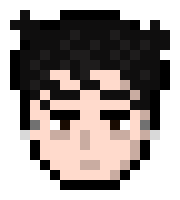
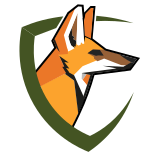
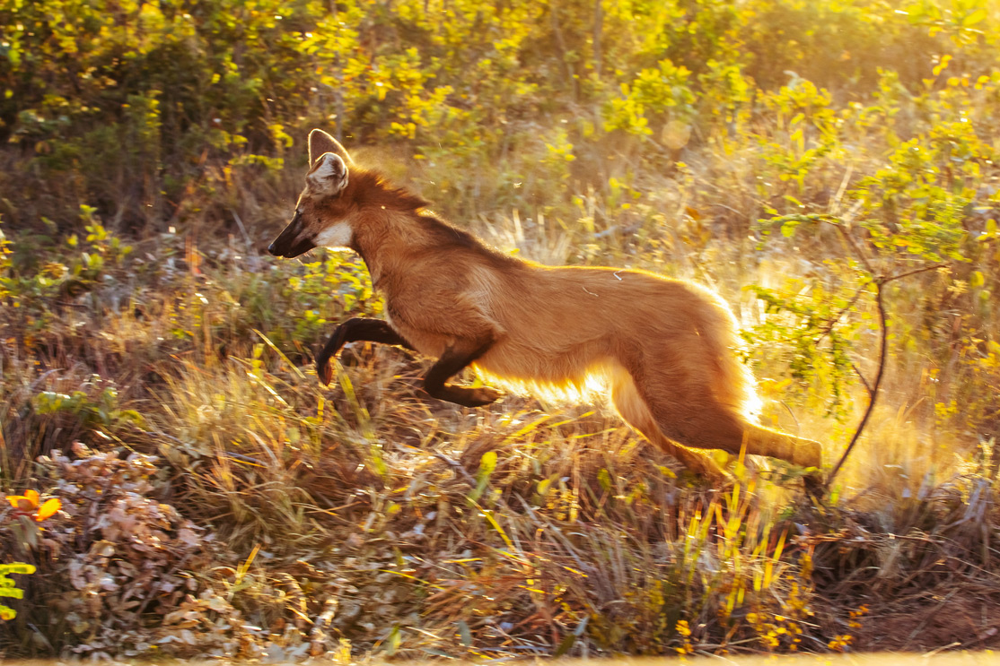
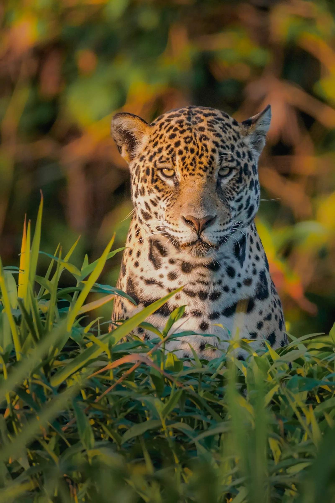
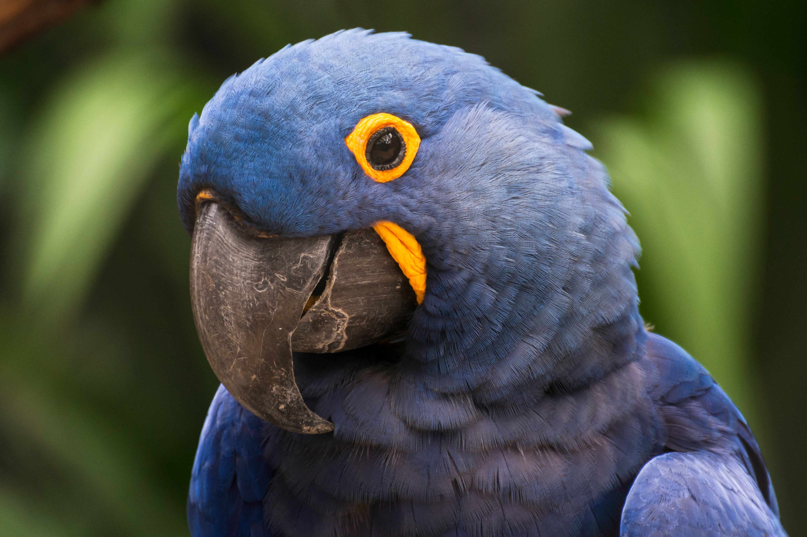
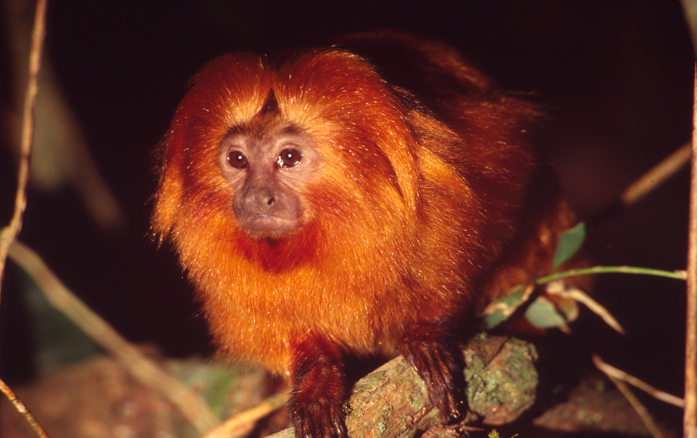

Stela Causso
UX/UI Designer & Gestora do ProjetoResponsável pela gestão do projeto, identidade visual e prototipação das experiências.
O Extinção Zero é uma experiência digital sobre os animais ameaçados e os biomas brasileiros com dados reais, histórias e interação para transformar conhecimento em preservação.


• avistamento raroChrysocyon brachyurus

O Brasil abriga cerca de 13% de todas as espécies do planeta, e lidera listas de fauna ameaçada.
Mais de 1.200 espécies de animais brasileiros estão
oficialmente ameaçadas de extinção. Desmatamento,
queimadas, tráfico de animais silvestres e mudanças
climáticas avançam sobre habitats que levaram milênios
para se formar. Muitas dessas espécies podem desaparecer
antes mesmo de serem estudadas pela ciência.
O Extinção Zero nasceu na Fatec Carapicuíba para mudar
essa equação: transformar dados oficiais em experiências
digitais que aproximam as pessoas da fauna brasileira.
Acreditamos que ninguém protege o que não conhece,
por isso, conhecer é o primeiro passo para preservar.



Estudantes da Fatec Carapicuíba unidos por uma missão: usar tecnologia e design para defender a fauna brasileira.

Responsável pela gestão do projeto, identidade visual e prototipação das experiências.
Responsável pela arquitetura de dados, desenvolvimento do site e do aplicativo.
A principal base global sobre o status de conservação das espécies, mantida pela União Internacional para a Conservação da Natureza.
VERSÃO 2024-2 · ATUALIZADA EM 01/2024 Saiba maisInstituto Chico Mendes e Ministério do Meio Ambiente: Lista Nacional Oficial de Espécies da Fauna Ameaçadas (Portaria nº 148/2022).
PORTARIA MMA Nº 148 · JUN/2022 Saiba maisInstituto Brasileiro de Geografia e Estatística: mapa oficial de biomas e dados territoriais do Brasil.
MAPA DE BIOMAS · 2019 Saiba maisONG referência no monitoramento da Mata Atlântica, com atlas anual dos remanescentes florestais em parceria com o INPE.
ATLAS DOS REMANESCENTES · 2023 Saiba mais